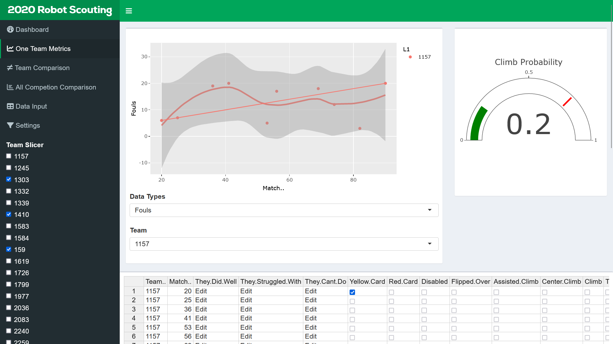
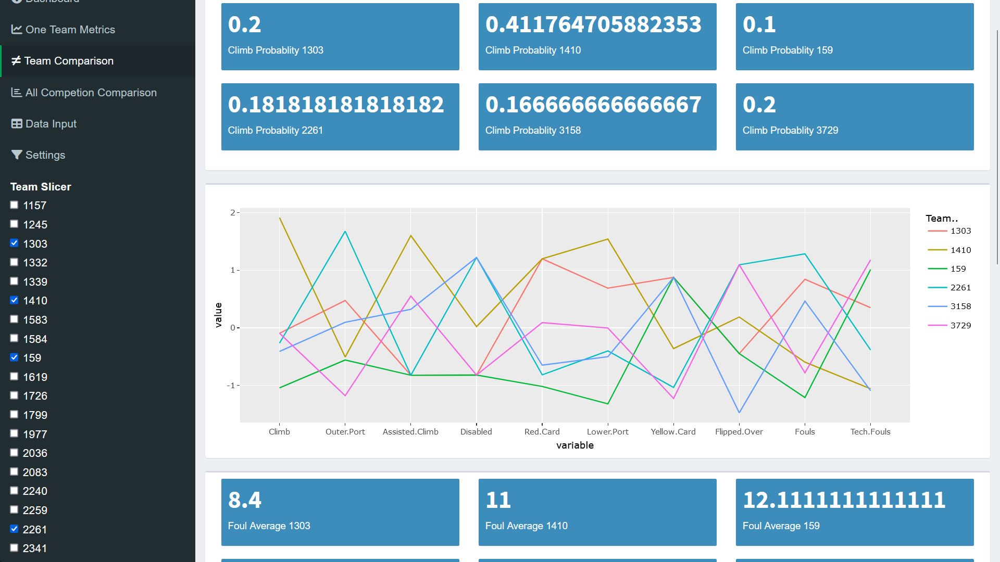
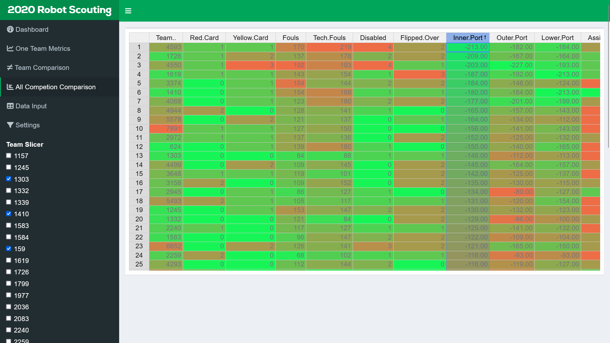
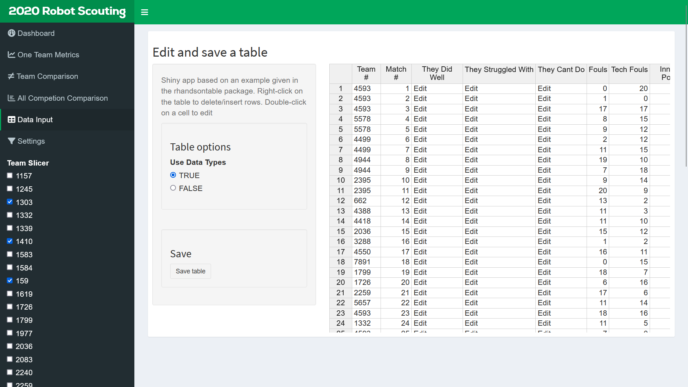

2020 FRC Match Scouting App
Scroll to the bottom for a live demo!

This page details the scouting app that was written for 2020 match scouting for FRC. It was designed with the intention of being able to be modified for future FRC games and was written entirely in R by me. It was originally hosted on AWS EC2, but now I am self-hosting the most up to date version as this app has been discontinued. As such, at the end of this page there is a live version of the app for demo purposes. Pictured to the left here is the Main Dashboard screen that would be open at first start up of the app. It shows the metrics for my team 4388, and includes several key metrics for the team.
When writing this app I learned so many skills as this was one of the few major programming projects that I have created. The creation of this app started in the off-season before the 2020 FRC season, close to the beginning of the 2019-2020 school year. The main framework of this app is the rshiny package and shinyserver. This allowed for major data analysis programming and powerful reactive ui. The development of this app was ended by COVID-19 as the 2020 FRC season was my last full season of FRC and the app was no longer required, so it was never used at competition unfortunately. Pictured to the right here is the one team metrics page, which the main dashboard was based on. This page would be used to look at the information and metrics for any team at the competition.


Seen at the left here is the team comparison page. This app was designed with realtime match-to-match data in mind. This meant that we could use the data in pre-match discussions during the qualification matches at competition. This was done as the previous system (See FRC Match Scouting 2019 for more detail) provided some of this benefit, but with significantly more manual data movement work in the stands, and this new system was designed to replace that old process and make it easier. This page has my personal favorite visualization in the whole project, the center line chart has normalized data values so that higher is better across the board.
The last main requirement for this app was a comparison of all teams. To do this I decided to use this spreadsheet format as this allows for conditional formatting to make it possible to see patterns and make visual comparisons and for sorting by variables. This means that it would possible to find teams that were good at specific aspects of the game. Doing good scouting is critical to success in the elimination matches as being able to pick alliance partners that will complement each other and your team and be able to complete a decent strategy. Up to this point was the bulk of the work for this project, beyond the behind the scenes data manipulation and cleaning.


This was data collection page for the app. This was something that was running behind schedule and I was unsure what the best way to make this work would have been. Due to this, the temporary solution that was implemented was this spreadsheet input. This would have been doable as it was designed to be not terrible, as the match progressed you would move across the row in the sheet and then down for each successive match. I do know that this would have been bad, but as it was, the app was never put into service as the 2020 FRC season was effectively canceled due to COVID-19. This sudden end to the season also marked the end of the work on this project. Since then there have been a few upgrades that have been made to make it easier to set up and display as a demo. In this light, below is a link to a live version of the scouting app if you want to take a look.